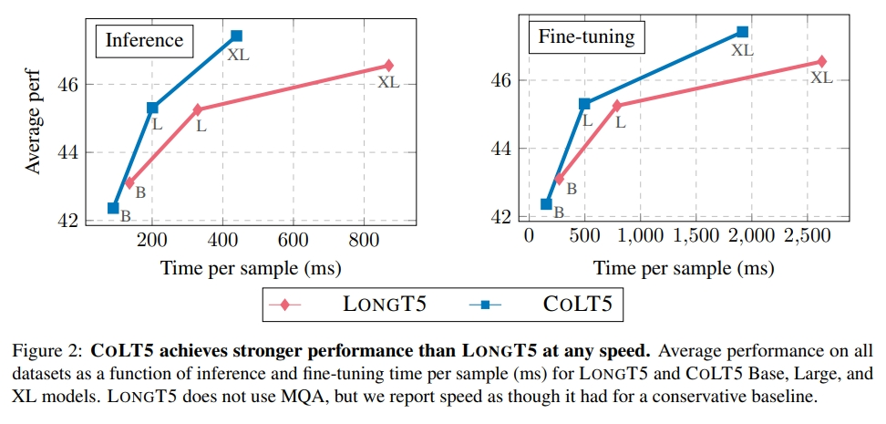

An Analysis of COLT5: Faster Long-Range Transformers with Conditional Computation
Optimizing Transformer models for long context windows has always been a problem. In the original transformer decoder implementation, to generate a sequence of length N, the time and memory complexity is respectively O(n2) and O(n). In this work, the authors proposed a way to optimize the coefficient of the n2 term, from 2 to 1/84.
The optimization is done with a "routing" layer: by adding a "light" attention and mlp alongside the original "heavy" attention and mlp, the model can use more computation power on the important tokens, and use less computational power on unimportant tokens. The authors trained a model with a 64k context window, yielding higher performance (F1 score) in less inference time than LongT5 on the NarrativeQA dataset.
This method also improves the interpretability of the Transformer model. The routing score can be used as an importance score of the token.
Literature Review
Efficient Streaming Language Models with Attention Sinks(2023):
Deploying Large Language Models (LLMs) in streaming applications such as multi-round dialogue, where long interactions are expected, is urgently needed but poses two major challenges. Firstly, during the decoding stage, caching previous tokens' Key and Value states (KV) consumes extensive memory. Secondly, popular LLMs cannot generalize to longer texts than the training sequence length. Window attention, where only the most recent KVs are cached, is a natural approach -- but we show that it fails when the text length surpasses the cache size. We observe an interesting phenomenon, namely attention sink, that keeping the KV of initial tokens will largely recover the performance of window attention. In this paper, we first demonstrate that the emergence of attention sink is due to the strong attention scores towards initial tokens as a ``sink'' even if they are not semantically important. Based on the above analysis, we introduce StreamingLLM, an efficient framework that enables LLMs trained with a finite length attention window to generalize to infinite sequence lengths without any fine-tuning. We show that StreamingLLM can enable Llama-2, MPT, Falcon, and Pythia to perform stable and efficient language modeling with up to 4 million tokens and more. In addition, we discover that adding a placeholder token as a dedicated attention sink during pre-training can further improve streaming deployment. In streaming settings, StreamingLLM outperforms the sliding window recomputation baseline by up to 22.2x speedup.
Think before you speak: Training Language Models With Pause Tokens(2023):
Language models generate responses by producing a series of tokens in immediate succession: the (K+1)th token is an outcome of manipulating K hidden vectors per layer, one vector per preceding token. What if instead we were to let the model manipulate say, K+10 hidden vectors, before it outputs the (K+1)th token? We operationalize this idea by performing training and inference on language models with a (learnable) pause token, a sequence of which is appended to the input prefix. We then delay extracting the model's outputs until the last pause token is seen, thereby allowing the model to process extra computation before committing to an answer. We empirically evaluate pause-training on decoder-only models of 1B and 130M parameters with causal pretraining on C4, and on downstream tasks covering reasoning, question-answering, general understanding and fact recall. Our main finding is that inference-time delays show gains when the model is both pre-trained and finetuned with delays. For the 1B model, we witness gains on 8 of 9 tasks, most prominently, a gain of 18% EM score on the QA task of SQuAD, 8% on CommonSenseQA and 1% accuracy on the reasoning task of GSM8k. Our work raises a range of conceptual and practical future research questions on making delayed next-token prediction a widely applicable new paradigm.
Longformer: The Long-Document Transformer(2020):
Transformer-based models are unable to process long sequences due to their self-attention operation, which scales quadratically with the sequence length. To address this limitation, we introduce the Longformer with an attention mechanism that scales linearly with sequence length, making it easy to process documents of thousands of tokens or longer. Longformer's attention mechanism is a drop-in replacement for the standard self-attention and combines a local windowed attention with a task motivated global attention. Following prior work on long-sequence transformers, we evaluate Longformer on character-level language modeling and achieve state-of-the-art results on text8 and enwik8. In contrast to most prior work, we also pretrain Longformer and finetune it on a variety of downstream tasks. Our pretrained Longformer consistently outperforms RoBERTa on long document tasks and sets new state-of-the-art results on WikiHop and TriviaQA. We finally introduce the Longformer-Encoder-Decoder (LED), a Longformer variant for supporting long document generative sequence-to-sequence tasks, and demonstrate its effectiveness on the arXiv summarization dataset.
Biography

Joshua Ainslie
MS in Statistic at Stanford; Software Engineer at Google
Tao Lei
PhD at MIT, Research scientist at Google Brain
Michiel de Jong
PhD at USC; Research Scientist at Stealth Startup; Former Googler
Santiago Ontanon
PhD at Autonomous University of Barcelona; Associate Professor at Drexel University
Siddhartha Brahma
PhD at EPFL; Research Scientist at Google Deepmind
Yury Zemlyanskiy
PhD student at USC
David Uthus
PhD at The University of Auckland, Software Engineer at Google
Mandy Guo
BS at Cornell, Software Engineer at Google
James Lee-Thorp
Google Researcher
Yi Tay
Senior Research Scientist at Google Brain
Yun-Hsuan Sung
PhD at Stanford; Senior Research Scientist at Google
Sumit Sanghai
Software Engineer at Google
Academic Impact
This work enables a new research question: optimizing the transformer at a token level. This work assumes that each token has a different importance in the sequence, so they can allocate less computational power to the less important token, thus reducing overall time complexity. Another interesting research question is, can we add more computation power to a specific token? (Think before you speak: Training Language Models With Pause Tokens) studied this method, and reported a significant performance gain when allowing more computation of the important output tokens.
Industry Impact
The cost of running LLMs is a huge burden to be deployed everywhere. For example, the "new bing" chatbot has multiple versions of model sizes, and they have a small "router" in front of all incoming requests to tell the "difficulty" of the question. However, the performance of this router is very bad, so you'll often see new bing replies silly responses for tricky questions.
So, optimizing LLMs for longer contexts and fewer computations can help the industry a lot.
Review from Yuxiong Wu
Score: 8/10 (Strong Accept)
Pros:
Innovation: Implements a conditional computation mechanism for efficient processing of long texts.
Efficiency: Significantly improves training and inference speed, especially with extremely long inputs.
Scalability: Effectively handles long inputs up to 64k tokens.
Few-Shot Learning Capabilities: Performs well in few-shot learning tasks.
Cons:
Limited to Encoder: Conditional computation is only applied to the encoder, not suitable for token-by-token generation in decoders.
Specialization & Adaptability: Primarily designed for long sequences, might not be suitable for short sequences or require training from scratch.
Decoder Integration: No exploration of how to integrate this model with decoders, limiting its application in decoder-only models.
Review from Yuxuan Lu
Score: 8/10 (Strong Accept)
Pros:
Novel idea: Optimizing transformers with Comditional Computation is really interesting and novel idea
Results: Outperforms other methods while takes less computational power
Cons:
Can't be applied to transformer decoders, which most recent model is based on
Require training from scratch, can't "plug-and-play"
References
[1] Sachin Goyal, Ziwei Ji, Ankit Singh Rawat, Aditya Krishna Menon, Sanjiv Kumar, Vaishnavh Nagarajan. Think before you speak: Training Language Models With Pause Tokens. ICLR 2024
[1] Guangxuan Xiao, Yuandong Tian, Beidi Chen, Song Han, Mike Lewis. Efficient Streaming Language Models with Attention Sinks. ICLR 2024
[1] Iz Beltagy, Matthew E. Peters, Arman Cohan. Longformer: The Long-Document Transformer. 2020
Team Members
Yuxiong WU & Yuxuan LU